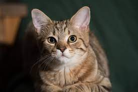

Cat
The domestic cat is a member of the Felidae, a family that had a common ancestor about 10–15 million years ago.[42] The genus Felis diverged from other Felidae around 6–7 million years ago.[43] Results of phylogenetic research confirm that the wild Felis species evolved through sympatric or parapatric speciation, whereas the domestic cat evolved through artificial selection.[44] The domesticated cat and its closest wild ancestor are diploid and both possess 38 chromosomes[45] and roughly 20,000 genes.[46] The leopard cat (Prionailurus bengalensis) was tamed independently in China around 5500 BC. This line of partially domesticated cats leaves no trace in the domestic cat populations of today. Cats have seven cervical vertebrae (as do most mammals); 13 thoracic vertebrae (humans have 12); seven lumbar vertebrae (humans have five); three sacral vertebrae (as do most mammals, but humans have five); and a variable number of caudal vertebrae in the tail (humans have only three to five vestigial caudal vertebrae, fused into an internal coccyx).[62]: 11 The extra lumbar and thoracic vertebrae account for the cat's spinal mobility and flexibility. Attached to the spine are 13 ribs, the shoulder, and the pelvis.[62]: 16 Unlike human arms, cat forelimbs are attached to the shoulder by free-floating clavicle bones which allow them to pass their body through any space into which they can fit their head.
